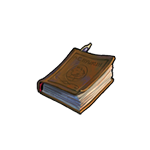
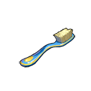
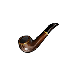
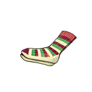
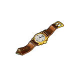

Получено: файл; исходный URL. Иллюстрация «Домашняя коллекция» из каталога ViveR_9, сопоставлена по точному названию; возможны отличия версий. Оригинальный файл без перекодирования; авторство отдельно не установлено. Страница: источник.
Домашняя коллекция
ВКонтакте; дата источника не указана- Тип
- Коллекции
- Версия и дата
- ВКонтакте; дата источника не указана
Элементы коллекции





Данные по источнику · ВКонтакте · дата источника не указана
Предварительно: один источник; требует сверки. Требуется сверка.
- Награда
- 5 000 монет и 300 опыта
- Где копать
- Замок, университет, зомбоящик, бригада Элвиса, клоун, медведи, горгулья, идолы
- Состав (источник Zombie-island)
- Книга; Щётка; Трубка; Носки; Часы.
- Награда (источник Zombie-island)
- 5000 Монеты; 300 Опыт.
- Где копать Домашнюю коллекцию в Зомби Ферме лопатами
- Волшебный олень; Бригада Элвиса; Замок; Шалаш; Зомбоящик; Университет; Ожившая рука; Клоун; Медвезомби; Медвед; Зомби-рок; Рука зомби; Горгулья раз; Горгулья два; Идол деревянный; Идол раз; Идол два; Медвежонок; Могила Z; Аэроплан; Снежище; Кроль; Голуби; Дерево мира.
- Домашняя коллекция выпадает из мешков Кладоискателей и Звездочетов
- Кладоискатель; Кладоискатель с мозгами; Звездочет; Звездочет за зомбаксы.
- Домашняя коллекция есть в Ценностях и Сокровищах
- Секретный клад; Сундук Чудовища; Пернатый подарок; Шишка; Коллекционная посылка; Коллекционный; Коллекционер; Сундук от Бабушкиного ковра; Цирковой шатер; Смелый презент.


Данные по источнику · ВКонтакте, ZombieS Forever · дата редакции не установлена
Предварительно: Историческая фанатская страница; независимость от других источников не установлена. Возможны различия версий и дат.. Требуется сверка.
- Награда по ZombieS Forever
- 5 000 монет и 300 опыта
- Места получения: выборка из источника
- Замок, университет, Зомбоящик, бригада Элвиса и др.
Данные по источнику · браузерная версия; платформа не указана · дата редакции не установлена
Предварительно: Содержимое списка: изображения и колонки могут терять смысл при извлечении текста; отдельная страница и дата не проверены. Подписи alt иногда ошибочны.. Требуется сверка.
- Текст карточки из каталога
- 5000 монет и 300 опыта Книга Щётка Трубка Носки Часы Где копать: Шалаш, Замок, Университет, Зомбоящик, Пирамида, Бригада Элвиса, Ожившая рука, Рука зомби, Рок-рука, Клоун, Медвежонок, Медвед, Медвезомби, Горгулья, Скамейка Раз, Ваза, идолы
Данные по источнику · Мой Мир (Mail.ru); историческая таблица · дата редакции не установлена
Предварительно: Источник сам использует знаки вопроса; не следует считать такие места подтверждёнными. Возможны изменения патча и платформы; независимость от других справочников не доказана.. Требуется сверка.
- Название в источнике
- Домашняя коллекция
- Где копать
- Замок, Университет, Зомбоящик, Бригада Элвиса, Ожившая рука, Клоун, Медвежонок, Медвед, идолы
- Награда
- 5000 монет и 300 опыта
Данные по источнику · браузерная версия; на сайте указана игра ВКонтакте · дата редакции не установлена
Предварительно: Исторический текст; сильно совпадает со справкой Zommbie.at.ua, независимость не доказана. Отрицания и доступность могут измениться с патчем.. Требуется сверка.
- Где искать по странице «Зомбастики»
- Клоун, университет, медвезомби, ожившая рука, замок, бригада Элвиса, идол раз, деревянный идол, шалаш.
Данные по источнику · браузерная игра; платформа страницы не указана · 06.05.2012 публикация; снимок 24.11.2017
Предварительно: Содержание подтверждено по снимку Wayback. Архив — копия zf.3dn.ru, не независимый источник. Имена файлов значков не доказывают название предмета.. Требуется сверка.
- Где копать
- Клоун, Медвезомби, Средняя зимняя ёлка, Зомбоящик, Медвежонок, Шалаш, Идол раз, Бригада Элвиса, Горгулья два, Зомби-рок, Университет, Замок, Рука зомби, Марафонец, Горгулья раз, Идол деревянный, Маленькая зимняя ёлка, Медвед, Ожившая рука, Идол два.
- Добывает
- Кладоискатель.
- Награда
- 5000 и 300; единицы указаны только изображениями, не расшифрованы.
Данные по источнику · историческая браузерная версия, платформа не указана · 10.01.2014 — дата в каталоге; дата редакции материала неизвестна
Предварительно: Фанатский список без вероятностей и уточнения площадки; независимость от других источников не установлена.. Требуется сверка.
- Где искать по списку сайта
- Клоун, университет, медвезомби, ожившая рука, замок, бригада Элвиса, идол раз, деревянный идол, шалаш
- Оговорка
- Список может относиться к разным условиям, инструментам и периодам игры; не доказывает гарантированное выпадение. Заявления «только» и «невозможно» относятся лишь к времени и версии источника.
Данные по источнику · историческая браузерная игра; площадка не уточнена · 25.02.2013 — дата каталога; редакция неизвестна
Предварительно: Проверен текст в каталоге сайта; вероятность выпадения не указана. Исторические версии и даты могут различаться; списки и награды требуют сверки, независимость сайта от других справочников не установлена.. Требуется сверка.
- Награда в источнике
- По данному источнику: 1 жёлтая краска и 250 опыта. Награда совпадает с соседней коллекцией цветов и отличается от других описаний домашней коллекции; возможна ошибка копирования.
- Места в источнике
- Шалаш, замок, университет, зомбоящик, пирамида, бригада Элвиса, ожившая рука, рука зомби, рок-рука, клоун, медвежонок, медвед, медвезомби, горгулья, скамейка, ваза, идолы.
Связанные сущности
нет проверенных связей — требуется сверка.
Источники
- прочитано; проверка 2026-11-21
- прочитано: Zombie-island.moy.su; проверка 2026-11-21
- ZOMBIA: прочитана карточка в списке
- Ссылка на отдельную страницу; отдельно не проверена
- Zombiemail: строка таблицы коллекций; Мой Мир
- Зомбастики: прочитана соответствующая строка; возможная копия другого справочника
- Web Archive: снимок страницы zf.3dn.ru
- ViveR_9: изображение в каталоге коллекций; совпадение названия
- zommbie.at.ua: где искать коллекции
- zombi-ferma.ucoz.net: каталог коллекций